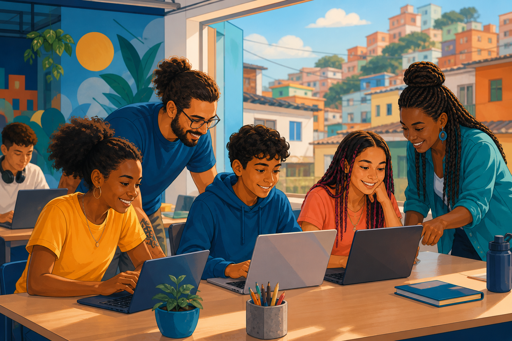

Favela 3D
Modelo de transformação territorial orientado pelos pilares Digna, Digital e Desenvolvida, com soluções definidas a partir das necessidades de cada comunidade.
Frentes de atuação
Iniciativas sociais ganham escala quando combinam diagnóstico local, participação comunitária e acompanhamento de resultados.
Modelo de transformação territorial orientado pelos pilares Digna, Digital e Desenvolvida, com soluções definidas a partir das necessidades de cada comunidade.

Formação para lideranças sociais, com conteúdos de gestão, inovação e mobilização de recursos voltados ao fortalecimento das organizações locais.

Programas que apoiam famílias e mulheres com acompanhamento, qualificação e caminhos para geração de renda e autonomia.
Cadastre seu interesse para receber informações sobre formas de apoiar iniciativas sociais.
Preencher cadastro